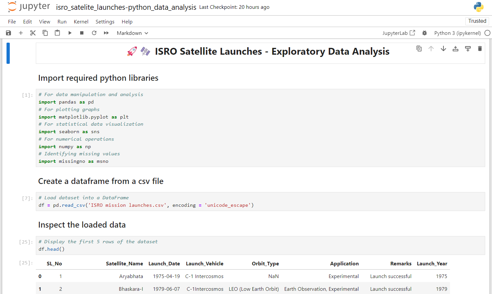
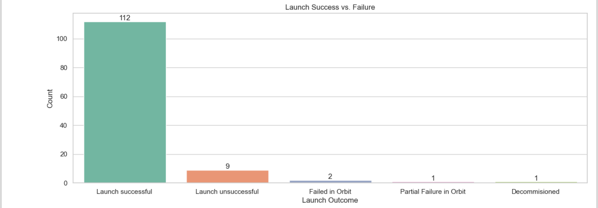
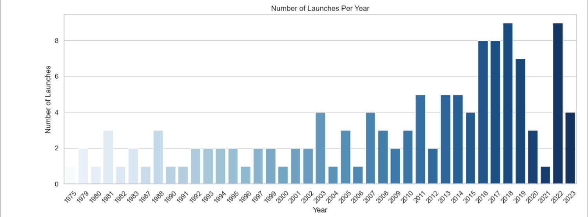
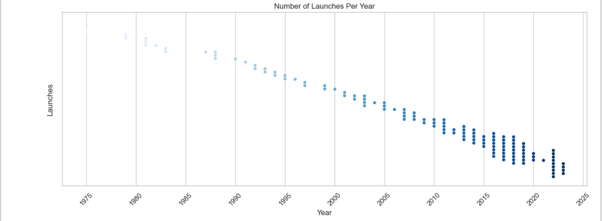
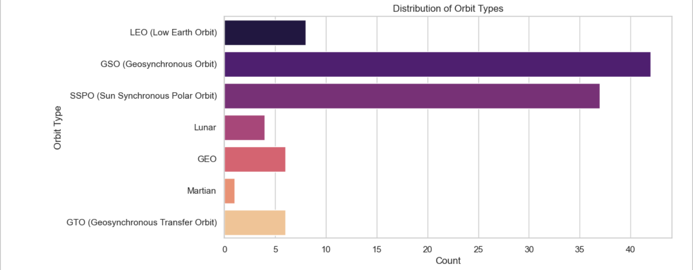
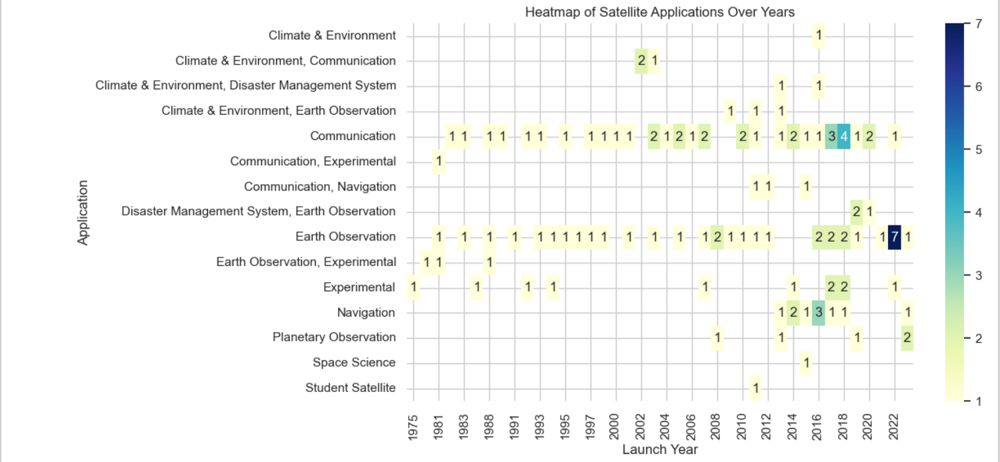
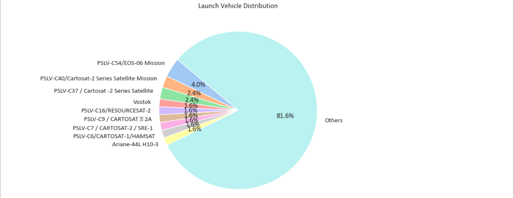

Python Exploratory Data Analysis: ISRO Satellite Launches
Project Overview
This project performs an Exploratory Data Analysis (EDA) on a
dataset containing information about ISRO satellite launches. The goal
of this project is to uncover insights into ISRO's satellite launch
history, analyse the frequency of launches over time, the types of orbit
placements, satellite applications, and the success rate of launches.
This analysis helps in understanding trends in ISRO's satellite
missions, launch vehicle distribution, and application types.
Objectives
The primary objectives of this project are:
To understand the success and failure rates of satellite launches.
To analyse the frequency of satellite launches over time.
To identify the distribution of orbit types in ISRO missions.
To assess the different application purposes of launched satellites.
To explore the diversity in the launch vehicles used.
Data Source
The dataset used in this project is a CSV file ISRO Mission Launches, containing fields such
as:
Attribute
Description
SL No
Unique serial number of the launch.
Satellite Name
Name of the satellite.
Launch Date
Date of the launch.
Launch Vehicle
Vehicle used for the launch.
Orbit Type
The orbit type of the satellite.
Application
Purpose or application of the satellite.
Remarks
Launch success status or additional comments.
Environment and Setup
Prerequisites:
Python 3.7 or above
Jupyter Notebook (or any other compatible IDE such as Google Collab)
Required libraries:
Pandas
Matplotlib
Seaborn
Numpy
Setup Instructions:
Clone the project repository or download the dataset.
Open a Jupyter Notebook.
Install the required libraries if they are not already installed:
bash pip install pandas matplotlib seaborn numpy
Load the CSV file in the Jupyter Notebook and start the analysis.

Data Preprocessing Steps
Data Loading: The CSV file is read into a pandas DataFrame.
Data Inspection: Basic information about the dataset structure, data
types, and initial values are reviewed using head(), info(), and
isnull() to check for missing values.
Column Renaming: Column names are standardized for easier handling,
with SL_No, Satellite_Name, Launch_Date, Launch_Vehicle, Orbit_Type,
Application, and Remarks as the final column names.
Date Conversion: Launch_Date is converted to a datetime format for
easier extraction of year-based insights.
Missing Data Handling: Any missing values in relevant columns are
identified and handled.
Exploratory Data Analysis
Steps of EDA with visualizations and analysis:
6.1 Launch Success Analysis
Objective: To compare the number of successful vs.
unsuccessful launches.
Visualization: A bar plot shows the count of each
outcome (success or failure).
Insights: Observes the overall success rate and
trends in successful launches.

6.2 Yearly Launches
Objective: To analyse how the frequency of satellite
launches has changed over time.
Visualization: A bar plot of the number of launches
per year. Also depicted the same using Swarm plot.
Insights: Identifies any trends in launch frequency
over the years.


6.3 Orbit Type Distribution
Objective: To evaluate the diversity of orbit
placements for launched satellites.
Visualization: A horizontal bar plot of orbit types.
Insights: Shows the most common orbit types used by
ISRO for satellite placement.

6.4 Satellite Applications
Objective: To understand the primary applications for
ISRO’s satellite missions.
Visualization: A heat map showing the types of
applications for each satellite, as per launch year.
Insights: Highlights popular applications such as
Communication, Earth Observation, Navigation, and Experimental.

6.5 Launch Vehicle Distribution
Objective: To analyse the range of launch vehicles
used.
Visualization: A pie chart showing the distribution
of each launch vehicle type.
Insights: Shows the diversity and reliance on
different launch vehicles over time.

Conclusion
The EDA on ISRO satellite launches provided the following insights:
Launch Success Rate: ISRO’s satellite launches
show a high success rate, with most missions reaching their intended
orbit successfully.
Frequency of Launches: There has been a steady
increase in ISRO’s launch frequency over recent years, showing
the organization's growing capabilities.
Orbit Types: Low Earth Orbit (LEO) is the most used
orbit type, consistent with ISRO’s mission objectives.
Applications of Satellites: Earth Observation and
Experimental satellites dominate ISRO’s applications, aligning
with its goals for environmental monitoring, weather prediction, and
technological development.
Launch Vehicles: A variety of launch vehicles have
been utilized, showcasing ISRO’s adaptability and innovation in
launch technology.
Future Improvements
The project can be expanded in several ways:
Detailed Time-Series Analysis: Performing a deeper time-series
analysis to identify seasonal or annual trends in launches.
Additional Metrics: Including more metrics, such as payload weight or
mission costs, could add depth to the analysis.
Interactive Visualizations: Using libraries like
Plotly for more interactive and engaging
visualizations.
Comparative Analysis: Comparing ISRO's launch data with other
space organizations for a broader perspective.